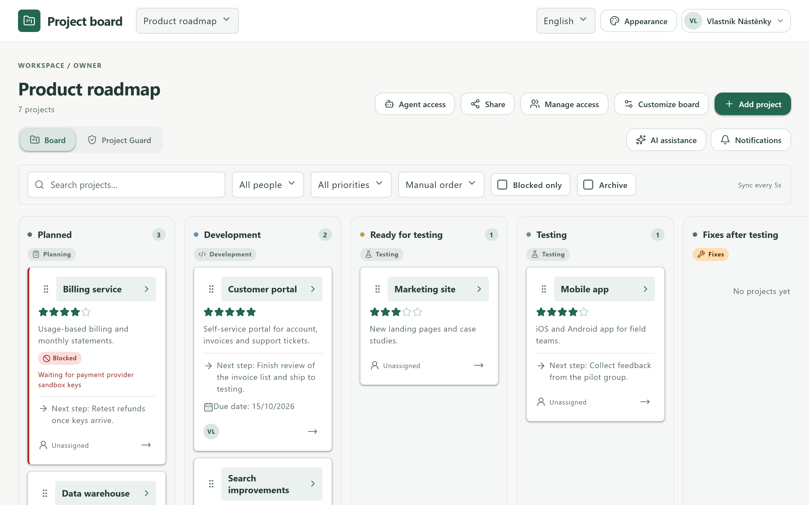
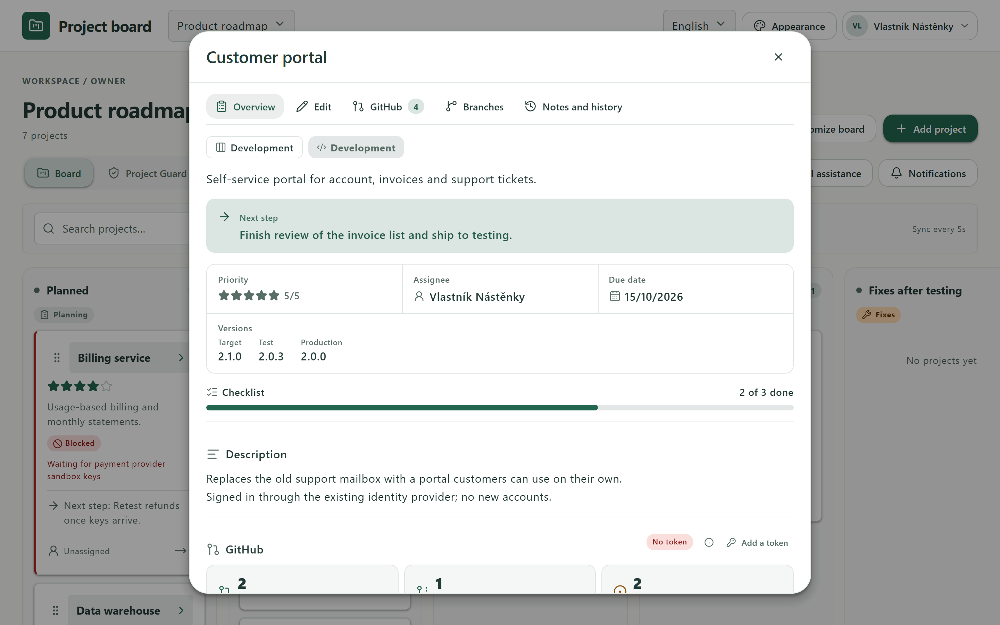
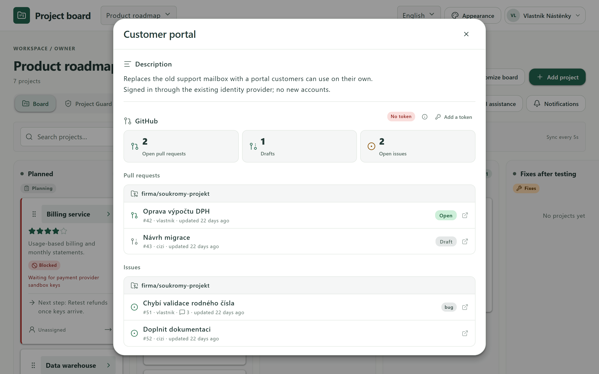
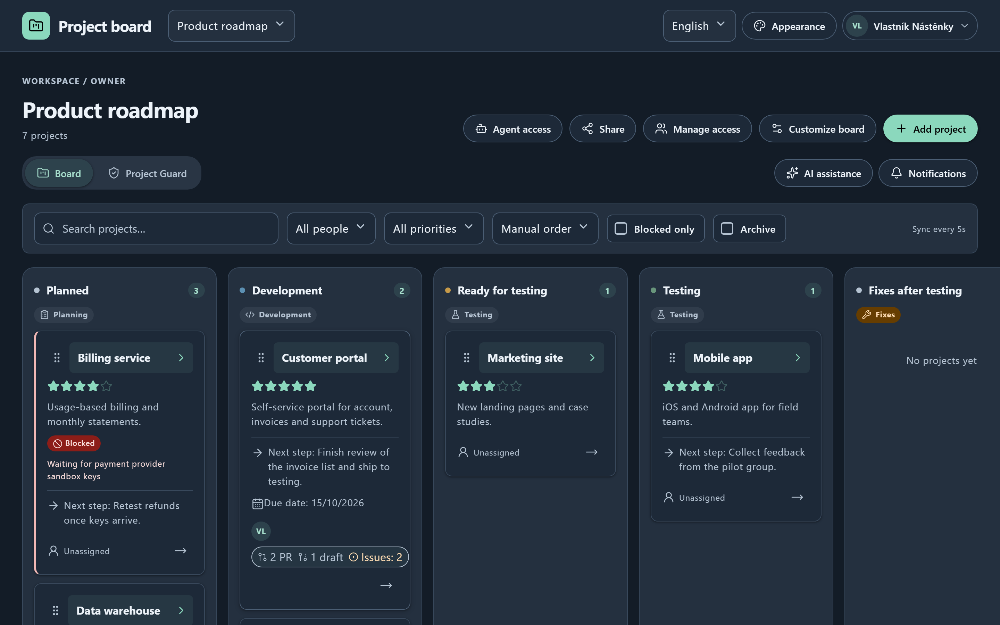
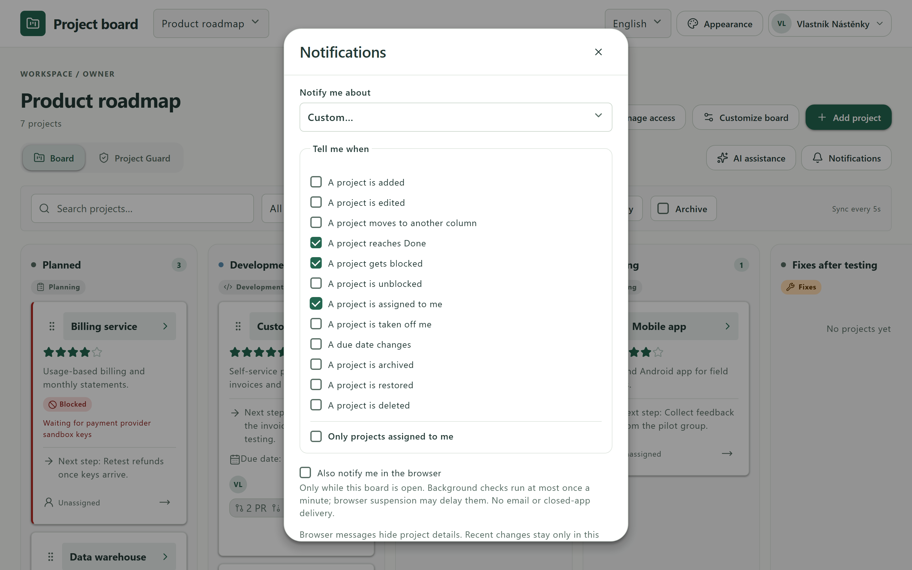
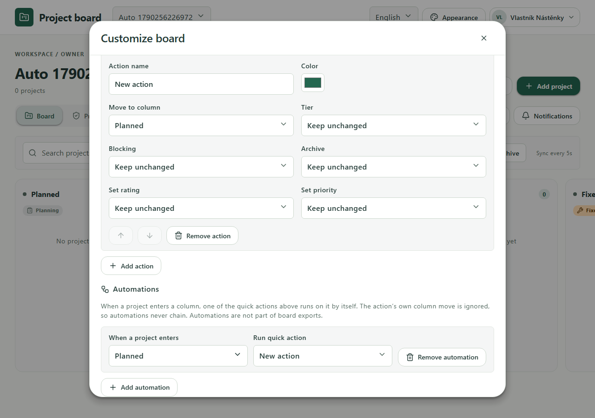
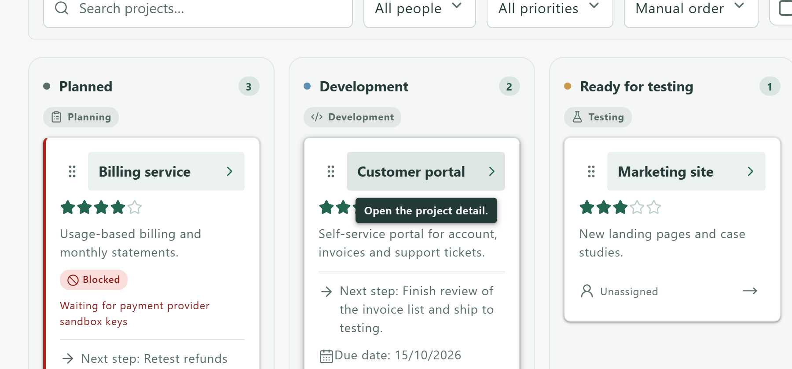
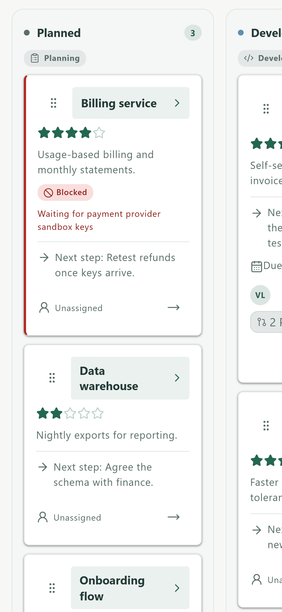

A private project board where each project is one card moving through your own workflow, while its target, test and production versions stay visible on their own. Linked to GitHub, with automations, custom notifications and an API for AI agents.

Status, next step, owner, due date, versions and checklist progress, readable at a glance.
Pull requests, issues and branches of linked repositories — each person sees only what their own GitHub account can.
When a project enters a column, a quick action runs on it by itself, in the same safe write as the move.
Choose exactly which events notify you, optionally only for projects assigned to you.
Audits your accessible issues and pull requests against your rules and prepares changes you review first.
Scoped, expiring API tokens for AI agents and scripts, and AI assistance with your own OpenAI or Azure key.
Owner, administrator, editor and viewer, invitations by username or link, with limits and revocation.
Six themes in light and dark, English and Czech, hover hints on every control, works on phones and installs as an app.






All screens show a synthetic demo board.
